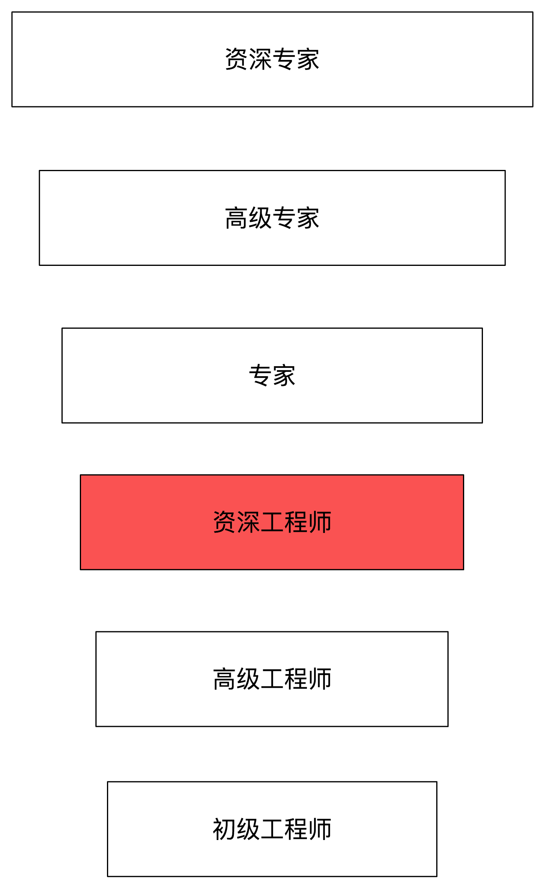
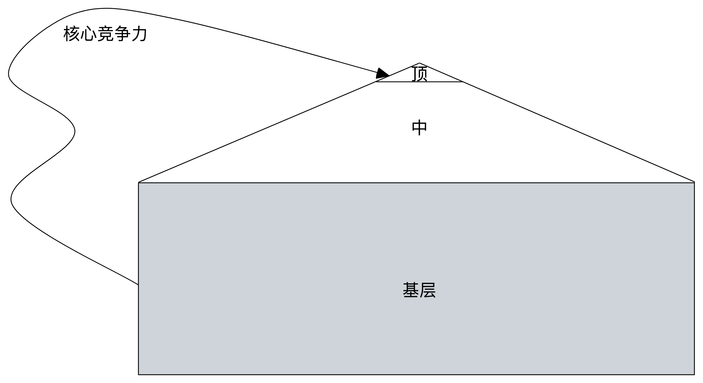

目前工作4年多，从事软件开发是我非常喜欢的职业，当时读大学时，主要想选择计算机专业和电子专业，对计算机太充满好奇了，最早接触电脑应该是读小学的时候，当时有电脑课，每周一节好像。后来接触就是去网吧了，不过只是玩游戏或者qq。
在这个行业，未来如何发展，每个人都有自己的目标，下面谈谈我的规划和想法，不构成任何建议和参考。
职业规划

根据职级划分，未来1-3年的目标是专家，在这行业有自己深度的思考和沉淀，总结提炼出自己的一套“理论”，需不懈努力而实现。我认为有下面具体举措：
1、拓展知识广度
2、扩展知识深度
3、业务架构、技术架构
4、不设边界（提前思考业务未来发展、架构设计）；不断提问（为什么？存在什么问题？）、不断思考（更好方案？业界方案？业务价值？）；挑战权威
5、全局业务视角
还有很长的路要走，还需不断努力，还需不断学习，披荆斩棘，路漫漫其修远兮，吾将上下而求索！
核心竞争力
不管在任何行业，拥有核心竞争力，就站在了行业的顶端，什么是核心竞争力呢，可以参考下知乎核心竞争力是什么？如何培养核心竞争力？
我应该构建以下自己的核心竞争力：
1、架构能力
2、视野，全局、体系化思考能力
3、思考，给自己提问题，反哺业务，给业务带来价值
4、学习能力
5、沟通领导能力
6、价值点、堡垒、差异化、沉淀、方法论、自己的思考
如何成功
我不推崇、更不相信成功学，我认为作为普通人想成功，通过以下两种方式：
1、通过自己，努力（勤奋）+ 想法 + 机遇（运气）
2、通过大佬提拔，贵人相助（构建关系圈、人情社会）
总结

说了这么多，职业规划，通过构建自己核心竞争力，在卷的时代，让自己朝着立于行业顶端而努力！